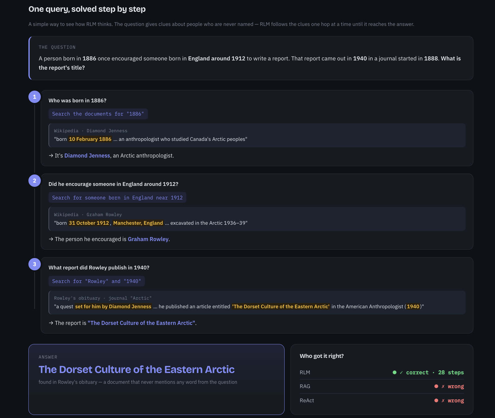

RLM BrowseComp Comparison
A fair, same-model benchmark of RAG, ReAct+BM25, and Recursive Language Modeling on long-document, multi-hop question answering.
Project Details
I built a controlled benchmark that keeps the model, provider, PDF text, and questions identical across RAG, ReAct+BM25, and RLM. RLM treats the corpus as a REPL variable and lets the model write code (peek, grep, chunk, summarize) and spawn recursive sub-LLMs for multi-hop reasoning.
Scoring uses SQuAD-style Exact Match plus token F1, while also recording tokens, latency, and LLM calls. On BrowseComp-Plus, a coding-focused, low-thinking model lifted RLM from 0.20 to 0.72 F1 — showing RLM excels where static retrieval fails.
Tech: Python, pdfplumber, rank_bm25, scikit-learn, HuggingFace datasets, OpenAI/Ollama-compatible endpoints.
Repo: git-agentops
Repo: git-agentops
Gallery

Benchmark results comparing RAG, ReAct+BM25 and RLM on BrowseComp-Plus.